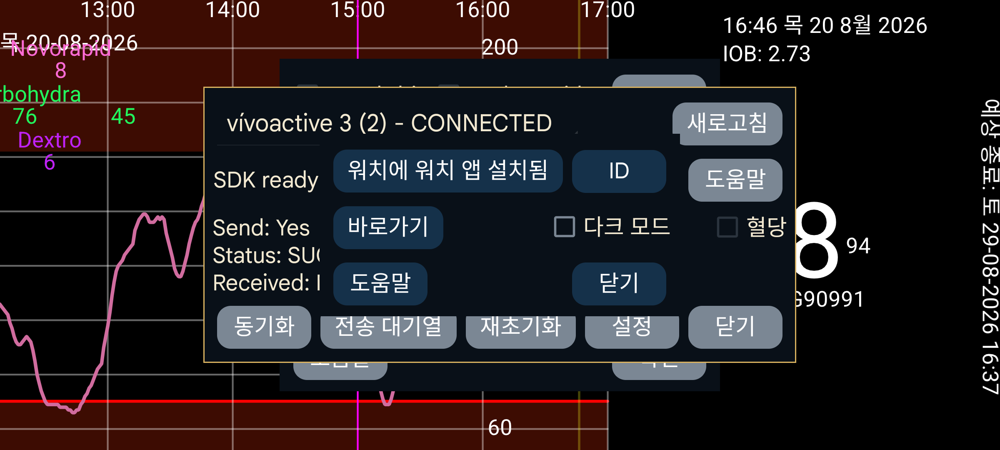

Kerfstok의 소스 는 https://www.juggluco.nl/Kerfstok/Kerfstok-source.html에서 받을 수 있습니다. 사용자는 자유롭게 수정할 수 있습니다. 각 워치 앱에는 고유 식별자가 있습니다. 식별자가 기본값과 다르면 Juggluco가 워치 앱과 통신할 수 있도록 그 식별자를 알아야 합니다. 다른 식별자를 지정하려면 ID 를 누르고 32자의 16진수 문자열을 입력하십시오. 한 기기의 Juggluco는 한 워치의 워치 앱 하나에만 연결할 수 있습니다. 이를 변경하면 데이터가 손실됩니다.
특정 값을 쉽게 입력할 수 있도록 바로가기를 Garmin 워치 앱 Kerfstok으로 보냅니다.
Kerfstok을 흰 바탕의 검은 글자 대신 검은 바탕의 흰 글자로 표시할지 지정합니다.